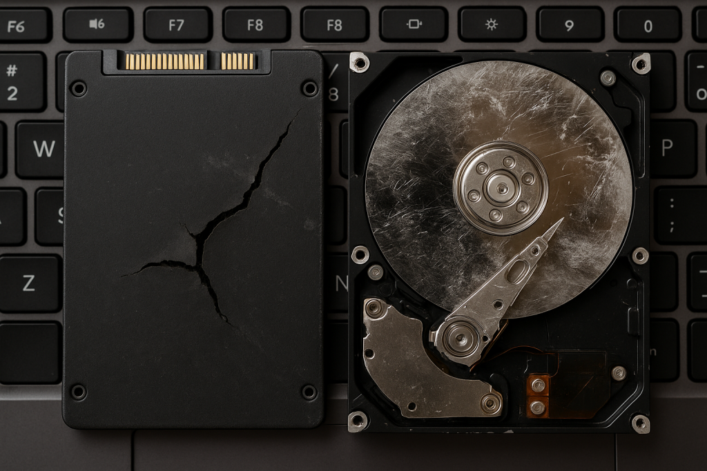

PlayStation 5 (PS5)
Problems with your PlayStation 5? At Console Repair Leeds, all our technicians have extensive expertise with the PS5, including the Standard and Digital Edition models. From hardware failures to software glitches, we handle all issues efficiently, professionally, and hassle-free.
Over the last 5 years, our team of specialists has become PS5 experts. Our
Leeds-based service centre is fully equipped with advanced PS5 diagnostic tools, and
we maintain a large stock of genuine spare parts. This ensures your console is in
professional hands and returned fully operational in the shortest time possible.
Common PS5 issues include **no display, HDMI port faults, overheating, disc drive
errors, controller sync issues, software glitches, SSD/OS failures, and network
connectivity problems**. Our technicians perform component-level repairs to resolve
these issues safely and cost-effectively.
Full Test & Diagnostics – We use the latest PS5 diagnostic equipment to
accurately identify faults.
Expert Technicians – Our team has in-depth knowledge of the PS5, ensuring
top-quality service.
Competitive Rates – Fair pricing without compromising on workmanship or parts
quality.
Peace of mind comes standard — all repairs and replaced parts carry a full
guarantee. We only use genuine original components. Our workshop is open Monday to
Saturday, 9am to 6pm. For questions or specific service requests, call us and one of
our experts will assist promptly.

Common Faults

HDMI Port Issues
PS5 consoles may suffer from HDMI port damage causing no display or flickering screens. We perform precision HDMI port replacements to restore full 4K/120Hz video output.
£59.99
Overheating / Fan Noise
Excessive fan noise, shutdowns, or overheating during extended gameplay can occur due to dust build-up or poor thermal paste application. We provide deep cleaning, thermal paste replacement, and fan servicing.
£49.99
SSD Upgrade / Failure
Slow load times or unrecognized storage can be caused by faulty internal SSDs. We repair, replace, or upgrade PS5 SSDs for faster and more reliable performance.
£69.99 – £109.99
Ultra HD Blu-Ray Drive Issues
PS5 disc drives can fail to read discs, eject incorrectly, or make grinding noises. We repair or replace the Ultra HD Blu-ray drive and laser components.
£59.99 – £89.99
Power / No Boot
PS5 fails to power on, randomly shuts down, or shows no boot sequence. Power board, motherboard, or internal fuse issues may be the cause. We diagnose and repair all power-related faults.
£69.99 – £109.99
USB / Controller Port Faults
USB ports failing to charge DualSense controllers or connect peripherals is a common PS5 issue. We repair or replace damaged ports to restore full functionality.
£39.99 – £69.99
Wi-Fi / Bluetooth Connectivity
Connectivity issues, controller disconnections, or slow online speeds are caused by faulty Wi-Fi/Bluetooth modules. We repair or replace modules to restore stable wireless connections.
£49.99
Liquid Damage
Spills or water exposure can corrode PS5 circuits. We provide ultrasonic cleaning, corrosion treatment, and component-level repairs to maximise recovery.
From £39.99 (inspection)
Your Fault Not Here?
Experiencing a PS5 problem not listed above? Contact us for expert diagnosis and repair. Our technicians will get your console running like new.
Need More Details About Our Services? Give Us a Ring on 01132591500
No Sound
If your PS5 powers on but produces no audio, the issue may be related to HDMI settings, the HDMI port, or internal audio circuitry. After ruling out TV and cable issues, our technicians can diagnose and repair the fault to restore full sound output.
No Picture / No Display
A blank screen or no signal on PS5 is commonly caused by HDMI port damage, incorrect resolution output, or internal video circuitry faults. We carry out full diagnostics and precision repairs to restore video output.
Internal SSD Issues
The PS5 uses a high-speed internal SSD for game storage. If your console fails to boot, shows storage errors, or crashes during gameplay, the internal SSD or related circuitry may be faulty. We diagnose and repair storage-related issues to restore performance.
Power & LED Light Issues
Flashing blue lights, no lights, or sudden shutdowns can indicate power supply, motherboard, or internal component faults. Our advanced diagnostics identify the root cause so we can repair the issue reliably.
Liquid / Physical Damage
Liquid spills or physical impact can cause internal corrosion or component damage and are not covered by manufacturer warranty. We offer professional cleaning, inspection, and component-level repairs to maximise the chance of recovery.